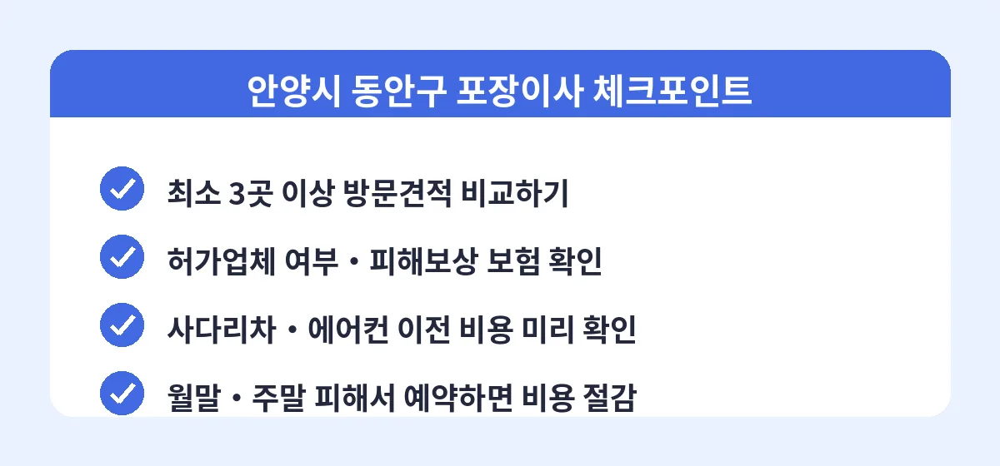

안양시 동안구는 평촌동, 범계동, 호계동, 비산동을 중심으로 계획도시형 아파트 단지가 밀집한 지역입니다. 평촌 학원가 주변으로 학기 전후 이사 수요가 몰리고, 재건축·리모델링 이슈가 있는 단지들의 이동 수요도 꾸준해서 이삿짐센터 예약 경쟁이 은근히 치열한 곳입니다. 이사를 준비 중이라면 비용 시세와 업체 고르는 요령을 미리 알아두는 것이 시간과 돈을 모두 아끼는 길입니다.
동안구 포장이사 비용은 원룸·투룸 38만~65만 원, 24평형 아파트 85만~125만 원, 32평형 이상 125만~175만 원 정도가 일반적인 범위입니다. 평촌 대단지 아파트는 이사 차량 진입과 사다리차 설치가 수월한 편이라 조건이 나쁘지 않지만, 엘리베이터 사용 시간 제한이 있는 단지는 작업 시간이 길어져 비용에 반영될 수 있습니다. 학기 시작 직전인 2월과 8월은 성수기라 같은 조건에서도 요금이 올라갑니다.

동안구에서 활동하는 업체들의 견적을 한 번에 받아 비교하면, 내 짐 양과 날짜 기준으로 어느 정도가 적정가인지 바로 감이 잡힙니다. 가격만이 아니라 보험 가입 여부, 작업 범위, 후기까지 함께 확인할 수 있어 처음 포장이사를 하는 분들에게 특히 유용합니다.
Q. 평촌에서 이사 비용을 아끼는 가장 현실적인 방법은?
첫째는 비교견적으로 적정가를 파악하는 것이고, 둘째는 성수기인 2월·8월과 월말·주말을 피하는 것입니다. 이 두 가지만 지켜도 같은 짐 양 기준으로 20만~40만 원까지 아낄 수 있습니다.
Q. 이사 당일 추가 요금을 요구받으면 어떻게 하나요?
방문견적 때 확인된 짐에서 달라진 것이 없다면 계약서 금액이 우선입니다. 견적서와 계약서를 근거로 협의하고, 부당한 요구가 계속되면 소비자상담센터(1372)에 도움을 요청할 수 있습니다. 이런 상황을 막으려면 계약서에 추가 요금 조건을 미리 명시해 두는 것이 가장 확실합니다.
Q. 입주 청소는 이사 전에 하나요, 후에 하나요?
짐이 들어오기 전 빈집 상태에서 하는 것이 기본입니다. 이사 하루 이틀 전에 입주 청소를 마치고, 이사 당일에는 짐 배치에 집중하는 일정이 가장 깔끔합니다.